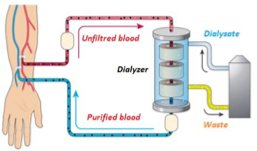
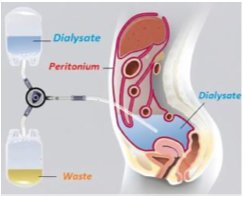

S1 · Biophysics · Summary · Part 6 of 6
Biophysics of solutions — 6
- Essentials
- Flux across a membrane
- Diffusive permeability
- Diffusion coefficient D
- Dialysis
- Exercises 9–12
- Exam traps
- Self-check
If you remember only this
- Across a membrane: Jd = −Dm dC/dx, with Dm = D(1 − σ) Sp/S (diffusion coefficient of the solute in the membrane — smaller than D).
- Initial diffusive flux: Jd,i = Qi/S = P |ΔCi|, so P = Qi / (S |ΔCi|) = J / ΔC.
- P = (D/l)(S′/S) = Dm/l, unit m/s: diffusive permeability per unit membrane area.
- D = kT/f (k = 1.38 × 10⁻²³ J/K); for a sphere f = 6πηr → D = kT/(6πηr).
- D = Cste · (T/η) · ∛(ρ/M): D increases with T, decreases with viscosity η, is inversely proportional to the cube root of M.
- Friction opposes diffusion (f in the denominator); temperature favours it.
- Dialysis purifies blood (urea, creatinine, excess K⁺, liquid) across a membrane: hemodialysis outside the body (dialyzer), peritoneal dialysis inside (peritoneum).
2-2. Diffusive flux across a membrane slide 34 2024-25 · 2025-26
Continuing part 5 (Jd = Q/S): across a membrane, Jd can also be written
Jd = −Dm dCdx
Dm = D (1 − σ) SpS
Dm = diffusion coefficient of the solute in the membrane · Sp = total pore area (permeable and impermeable) · S = membrane surface
Because (1 − σ) ≤ 1 and Sp/S < 1, the membrane lowers the diffusion coefficient (Dm < D).
2-3. Initial diffusive flux and diffusive permeability slide 34 2023-24 · 2024-25
Jd,i = QiS = Dl S′S |ΔCi| ≡ P |ΔCi|
Qi = initial molar flow rate (mol/s) · l = membrane thickness (pore length) · S′ = permeable pore area · ΔCi = initial concentration difference
P = Dl S′S = Dml [P] = m/s
P = diffusive permeability per unit membrane area
Use it backwards
P = Qi / (S·|ΔCi|) — the ratio flux / concentration difference. And Qi = P·S·|ΔCi|.
Units
Work in SI: cm² → ×10⁻⁴ m², µm → ×10⁻⁶ m, mmol/L = mol/m³, mol/L → ×10³ mol/m³, g/L = kg/m³ → ×10³ g/m³.
Remark The diffusion coefficient D slides 34–35 2023-24 · 2024-25 · 2025-26
| Relation | Meaning |
|---|---|
| D = kT / f | k = 1.38 × 10⁻²³ J/K, Boltzmann's constant · T in K · f = friction coefficient of the solvent on the diffusing particles |
| f = 6πηr | For spherical particles of radius r; η = viscosity coefficient (resistance to flow) |
| M = 𝒩m = 𝒩ρ·(4/3)πr³ ⇒ r = Cste · ∛(M/ρ) | 𝒩 = Avogadro's number, ρ = density of the particle |
| D = Cste · (T/η) · ∛(ρ/M) | D ↑ with T · D ↓ with η · D ∝ 1/∛M |
Memory trick — comparing two cases
Write D₁/D₂ and cancel what doesn't change: D₁/D₂ = (T₁/T₂)(η₂/η₁)(ρ₁/ρ₂)1/3(M₂/M₁)1/3. Same solvent, same η, same density
→ D₁/D₂ = (T₁/T₂)(M₂/M₁)1/3. Same particle → D ∝ T/η.
App. Medical application: dialysis and hemodialysis slides 35–36
Dialysis
A method for purifying solutions. In medicine it purifies the blood of its waste products (urea, creatinine, excess potassium, or liquid…)
across a membrane when the kidneys can no longer do so.
| Hemodialysis | Peritoneal dialysis | |
|---|---|---|
| Where | Outside the body | Inside the body |
| Exchange between | Blood and a fluid called dialysate | Blood and the dialysate |
| Membrane | An artificial filter, the dialyzer | The peritoneum: richly vascularized membrane enveloping the abdominal organs and digestive tract |


Ex. Worked exercises 9–12 slides 36–39
| Exercise | Data | Solution |
|---|---|---|
| 9 — P and D of a membrane | 20 and 90 mmol/L, S = 3 cm², pores = 1 % of S, l = 10 µm, Qi = 4.2 pmol/s | P = Qi/(S|ΔCi|) = 4.2×10⁻¹² / (3×10⁻⁴ × 70) = 0.2 × 10⁻⁹ m/s. σ = 0 ⇒ P = (D/l)(Sp/S), Sp = 10⁻²S ⇒ D = Pl·S/Sp = 0.2×10⁻⁹ × 10⁻⁵ / 10⁻² = 0.2 × 10⁻¹² m²/s |
| 10 — initial molar flow of sucrose | 0.3 and 0.1 mol/L, S = 20 cm², l = 0.2 mm, P = 2.5 × 10⁻⁶ m/s | Qi = PS|ΔCi| = 2.5×10⁻⁶ × 20×10⁻⁴ × (0.3 − 0.1)×10³ = 10⁻⁶ mol/s = 1 µmol/s |
| 11 — myoglobin radius, then molar mass | M = 17 kg/mol, D = 1.2 × 10⁻¹⁰ m²/s in water at 0 °C, η = 10⁻³ Pa·s | 1) r = kT/(6πηD) = 1.38×10⁻²³ × 273 / (6π × 10⁻³ × 1.2×10⁻¹⁰) = 1.66 nm. 2) Same density and η: D₁/D₂ = (T₁/T₂)(M₂/M₁)1/3 ⇒ M₂ = M₁ (D₁/D₂ × T₂/T₁)³ (slide answer: 4880 g/mol, with D₂ = 0.65 at 37 °C) |
| 12 — urea flow in an artificial kidney | S = 0.5 m², l = 50 µm, Dm = 10⁻⁹ m²/s, blood urea 5 g/L, dialysate free of urea | |ΔCi| = C₀ − 0 = C₀ ⇒ Qi = (DmS/l)C₀ = (10⁻⁹ × 0.5 / 50×10⁻⁶) × 5×10³ = 5×10⁻² g/s = 50 mg/s |
Exercise 11, part 2
The slide gives D₂ = "0.65 m²/s" without its power of ten, and its answer (4880 g/mol) can't be reproduced from the stated values:
with D₁/D₂ = 1.2/0.65 and T₂/T₁ = 310/273, the formula gives about 1.6 × 10⁵ g/mol. Learn the method; ask the teacher for the intended data.
Exam calculations with this lesson
- 2023-24 Q9 — 30 and 70 mmol/L, S = 4 cm², Qi = 4.2 pmol/s: P = 4.2×10⁻¹² / (4×10⁻⁴ × 40) = 0.26 × 10⁻⁹ m/s.
- 2025-26 Q10 — myoglobin D = 1.22 × 10⁻¹⁰ at 0 °C, same viscosity: D ∝ T ⇒ D = 1.22×10⁻¹⁰ × 310/273 = 13.9 × 10⁻¹¹ SI.
Exam traps
False statements to recognise
- "D = k·T·f" — false: D = kT/f. 2024-25
- "D decreases when temperature increases" / "temperature is not a driving factor" — false: D ∝ T; a high temperature ensures better diffusion. 2023-24 · 2024-25
- "Friction is a driving factor of diffusion" / "D is favoured by friction" — false: friction opposes it (f in the denominator). 2023-24 · 2024-25 · 2025-26
- "D is proportional to the cube root of the mass" — false: inversely proportional (∛(ρ/M)). 2024-25 · 2025-26
- "D increases in the presence of a membrane" — false: Dm = D(1 − σ)Sp/S is smaller. 2024-25 · 2025-26
- "In the presence of a dialysis membrane, D = jn/ΔC" — false: J/ΔC is the permeability P (key 2024-25: P = Jn/ΔC is correct). 2024-25 · 2025-26
- "Diffusive permeability is proportional to the total membrane area" — false: P is per unit area, P = (D/l)(S′/S). 2024-25
- "Fick's 1st law determines the equivalent / ionic concentration" — false: it gives the diffusion flow. 2023-24 · 2024-25
Self-check
Diffusion coefficient of a solute in a membrane?
Dm = D(1 − σ) Sp/S — smaller than D.
Initial diffusive flux in terms of P?
Jd,i = Qi/S = P|ΔCi|.
Two expressions of P, and its unit?
P = (D/l)(S′/S) = Dm/l; m/s.
Relation between D and the friction coefficient?
D = kT/f, with k = 1.38 × 10⁻²³ J/K.
Friction coefficient of a sphere?
f = 6πηr (η = viscosity, r = radius).
How does D depend on T, η and M?
D = Cste (T/η) ∛(ρ/M): ↑ with T, ↓ with η, inversely proportional to ∛M.
Qi = 4.2 pmol/s, S = 3 cm², ΔC = 70 mmol/L. P?
4.2×10⁻¹² / (3×10⁻⁴ × 70) = 0.2 × 10⁻⁹ m/s.
P = 2.5 × 10⁻⁶ m/s, S = 20 cm², ΔC = 0.2 mol/L. Qi?
2.5×10⁻⁶ × 20×10⁻⁴ × 200 = 10⁻⁶ mol/s = 1 µmol/s.
Radius of myoglobin from D = 1.2 × 10⁻¹⁰ m²/s at 0 °C in water (η = 10⁻³ Pa·s)?
r = kT/(6πηD) ≈ 1.66 nm.
Same particle and solvent, from 0 °C to 37 °C: how does D change?
D ∝ T: multiply by 310/273 (1.22 × 10⁻¹⁰ → 1.39 × 10⁻¹⁰).
Hemodialysis vs peritoneal dialysis?
Hemodialysis: outside the body, blood ↔ dialysate through a dialyzer. Peritoneal: inside, across the peritoneum.
Artificial kidney: S = 0.5 m², l = 50 µm, Dm = 10⁻⁹ m²/s, urea 5 g/L. Urea flow?
(10⁻⁹ × 0.5 / 5×10⁻⁵) × 5000 g/m³ = 0.05 g/s = 50 mg/s.